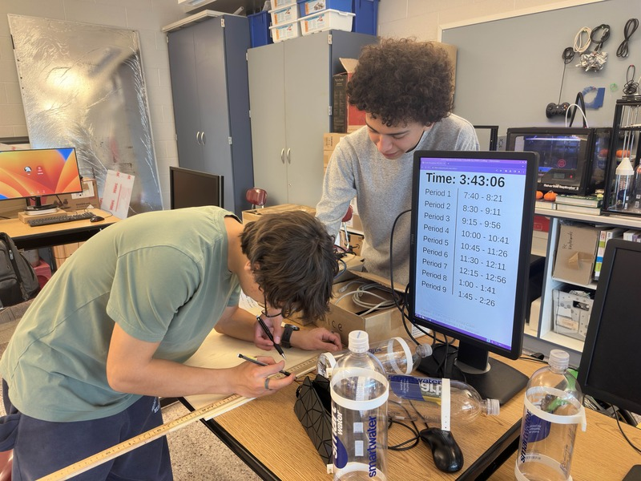

Autonomous Boat
<Back to main page>In my robotics club, we often split off into small groups and work on individual projects. However, this boat has been a recent exception. With the goal of taking pH level data as well as other measurements from some of our local bodies of water. We came to this decision because our water's unsafe pH levels after rainfall have been a known issue for quite some time, inspiring us to collect data which may help us take action. Intending for the boat to be controlled through a combination of AI and Satellite GPS, we are hard at work conceptualizing our plans for this project and getting our feet wet with the beginnings of the boat's construction.

Pictured above, two of my fellow club officers taking measurements in preparation for constructing our first prototype.
<Back to main page>